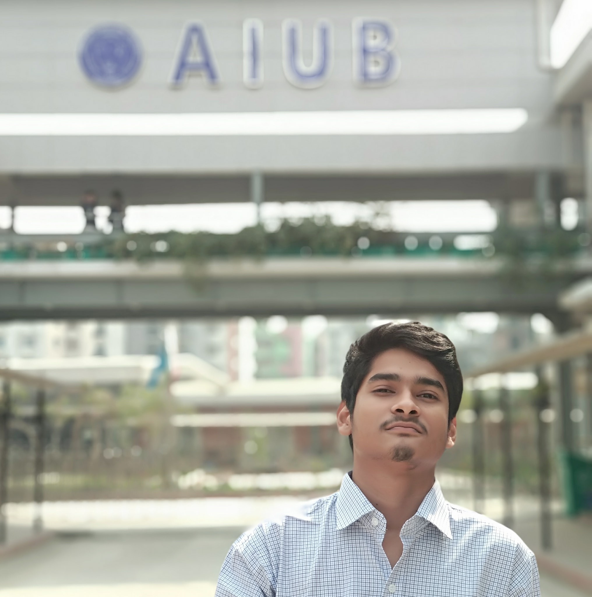

Maksudul Haque |
 | ||
| Home Address | : | Wapda coloni 750/ca Mirpur-12 Dhaka 1216 | Date of birth : 01/04/1999 |
| Telephone | : | 01684683581 | Nationality:Bengali |
| : | eeemons@live.com | ||
Education
|
|||
Professional Experience
|
|||
Activities and Interest
|
|||
| Languages | : | Bengali(Mother tongue),English(fluent) | |
| Computer skills | : | Full Command over Microsoft office, Microsoft Excel, Microsoft Power point,Photo editing software (Adobe photoshop), Video editing software (Da vinci resolve) | |
| Reference | |||
|
MD. ANWARUL KABIR American International University Bangladesh Senior Assistant Professor 017…….. anwarul-kabir@aiub.edu |
REZWAN KHAN Founder of Freedom Coaching Institute Freedom Coaching Institute 019…….. rezwan.khan@yahoo.com |
||